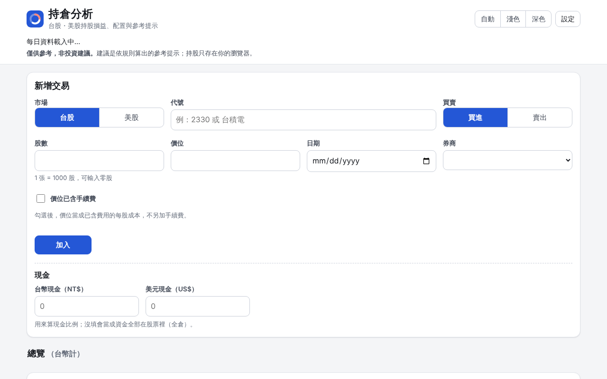

中興大學應用數學系學生，在台中。幫店家、工作室和研究團隊做網頁、小工具和資料分析，用數學系的嚴謹把事情做對。

台股、美股的持股損益與資產配置工具。每天開盤前自動更新行情資料，輸入交易就能算出損益、配置比例和參考提示；持股只存在使用者自己的瀏覽器，不上傳。支援手機、深色模式。
一頁式介紹、營業時間、地圖、菜單或價目表，手機上也好用。
預約、報名、計算機、簡單的內部管理工具，省下手動整理的時間。
Excel 資料清理、統計分析、R 圖表，適合研究生和小團隊。
有想法就來聊，報價不收費。